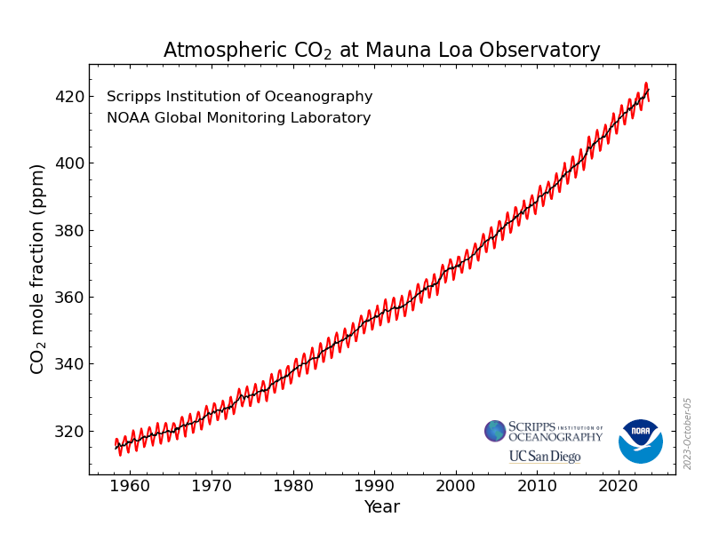

The one climate chart which matters
When we talk about climate change, one chart matters above all: the concentration of CO₂ in our atmosphere.
The Mauna Loa Observatory in Hawaii has measured carbon dioxide since 1958, giving us a clear trend line for the past 65 years.
Source: https://gml.noaa.gov/ccgg/trends/mlo.html
This graph gives us the final verdict whether we have made progress in the fight against climate change or not.
Further links
NOAA’s Global Monitoring Lab features current trends for other greenhouse gases, such as methane (CH₄), nitrous oxide (N₂O) and sulfur hexafluoride (SF₆).
The education section is also helpful.
¶